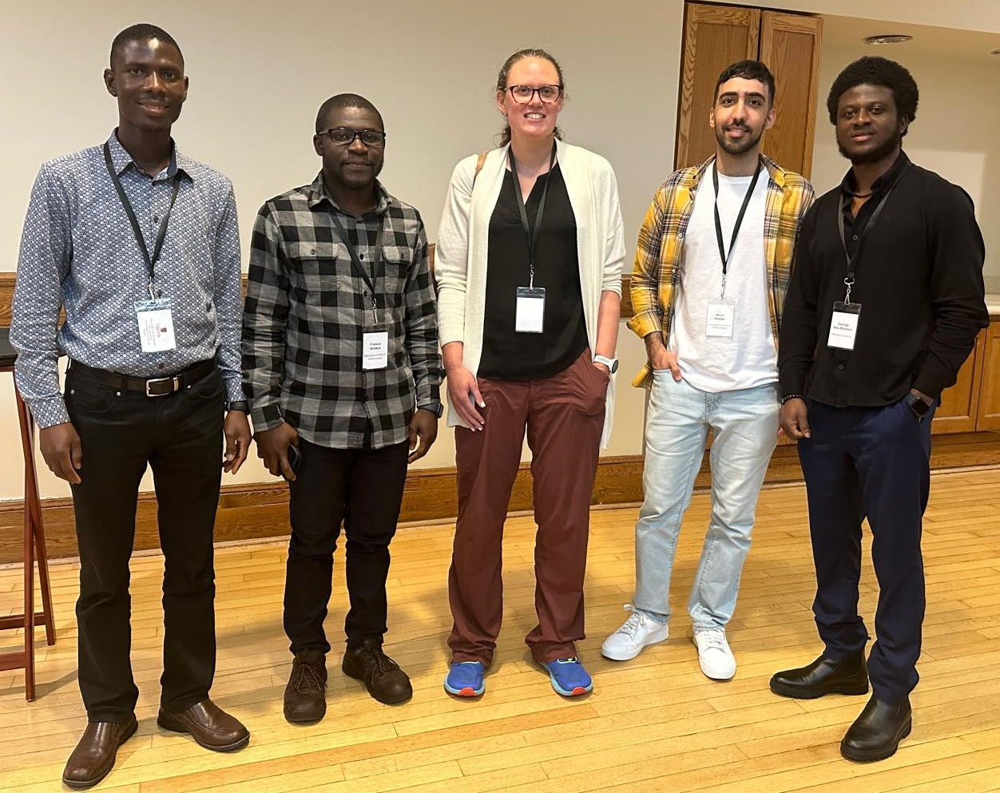

Students and trainees
Recruitment
I am looking to support graduate students with a strong interest in mathematical biology, who are interested in deriving, analyzing, parameterizing and validating dynamical systems models in ecology and epidemiology.
Future potential research projects include:
- advancing infectious disease modelling in adjacent disciplines;
- avian influenza and wildbird and mammal population dynamics;
- evolution of pandemic influenza;
- rabies establishment in Newfoundland;
- population dynamics of disease vector populations;
- evolutionary epidemiology during a pandemic in response to control measures.
You must submit your documents for consideration here. I will review submitted applications beginning November 1 of each year for admissions in the following September. All positions remain open until filled. Applicants that email me, rather than using the above link, may not be considered.
Advertising
I advertise available positions on the Society for Mathematical Biology Forum, IDDjobs and the Canadian Society for Ecology and Evolution job listings. I advertise available graduate student positions during the month of October. Postdoctoral fellowship positions are advertised based on the the timing of funding decisions.

Current trainees
Maheru Rahman (MSc in Biology, 2025; co-supervised with Sadri Znaidi). Candida albicans colonization in patients with cystic fibrosis.
Giuseppe Pasqualino (PhD in Interdisciplinary Studies, 2023) Stability transition of persistence and extinction in an avian influenza model with Allee effect and stochasticity.
Francis Anokye (PhD in Interdisciplinary Studies, 2021) Epidemic models for public health decision making and health care resource planning in smaller jurisdictions. Awards: ACCDMi Scholarship (2025).
Joseph Baafi (PhD in Biology, 2020) Control of infectious disease.
Laura Bruce (Medical Student, 2024) Estimating Hepatitis C Virus (HCV) Transmission in Newfoundland and The Impacts of Interventions on Elimination.
Joshua Mack (MSc in Biology, 2024) Evolutionary adaption and zoonotic spillover of avian influenza. Awards: ACCDMi Scholarship (2025), TD Environmental Bursary (2025), Northern Training Supplement Program (2024).
Abdou Fofana (PDF, co-supervised with Jude Kong, 2025-). Learning from the SARS-CoV-2 pandemic: building modelling frameworks that consider regional differences Awards: AI4PH Scholarship, 2025.
Resources for trainees in the Hurford Lab. To write an abstract please following the guidance described in How to write a Nature summary paragraph. To learn how to write please read Scientific writing made easy by Turbeck and colleagues.
Graduates
Miranda Wallace (MSc in Data Science, 2024-25). Predicting Regional Measles Spread Using a Spatial SEIR Model and Machine Learning.
George Adu-Boahen (MSc in Mathematics, 2022-25). Optimal control strategies in epidemic models: analysis of community and traveler isolation strategies under resource constraints.
Amin Afshari (Honours 2025, SURA 2024). Elimination, Suppression, or Mitigation? A Mathematical Framework for Cost Comparison of COVID-19 Pandemic Response Strategies and Mathematical models for the immune system. Current: PhD student, Simon Fraser University.
Dr. Zahra (Mohammadi) Cook (PDF, 2021-2023). Understanding the impact of travel restrictions on COVID-19 in Newfoundland and Labrador. Current: Python Instructor, Canadian Institute for Health Information.
Dr. Bo Zhang (PDF, 2021-2023, co-supervised with Shawn Leroux). Predicting spruce budworm outbreaks in Newfoundland.
Dr. Maria M. Martignoni (PDF, 2020-2022). Disease ecology models for COVID-19. Current: Postdoctoral fellow, Georgia State University.
Joshua Renault (USRA, 2020, 2021). Mathematical models for COVID-19.
Jake Prosser (MSc in Biology, 2019-2023). Mathematical models for the control of marine parasites. Current: Data analytics, New Brunswick Institute for Research, Data, and Training.
Dr. Joany Marino (PhD in Biology, 2016-2020, co-supervised with Suzanne Dufour). Mechanistic models of ecological interactions. Awards: MITACS Globalink. Current: Postdoctoral fellow, University Medicine of Greifswald
Dr. Abdou Fofana (PhD in Biology, 2015-2020). Spatial extension of the theoretical framework of the trade-off hypothesis for virulence evolution. Current: PDF, Memorial University, after Postdoctoral Research Associate, Boston University.
Joe Moran (MSc in Biology, 2017-2020, co-supervised with Nicolas Lecomte). The spread and persistence of rabies in the Arctic: a modeling study.
Fabio Frazao (MSc in Environmental Science, 2015-2018). The cascading effects of selective logging on seed dispersal and carbon stocks in the Brazilian Amazon. Awards: ACENET fellowship. Current: PhD student, Dalhousie University.
Sovit Chalise (MSc in Biology, 2014-2016). Biodiversity measures to summarize antibiotic resistance. Current: HS GovTech Solutions Inc.
Dr. Josie Hughes (PDF, 2013-2016). Modelling and analysis to support antimicrobial stewardship Current: Research Scientist, Environment and Climate Change Canada.
Matt Rittenhouse (MSc in Biology, 2014-2016). Effects of seasonally varying temperature and salinity on the dynamics os sea lice (Lepeophtheirus salmonis) Data analyst, Goodlife fitness.